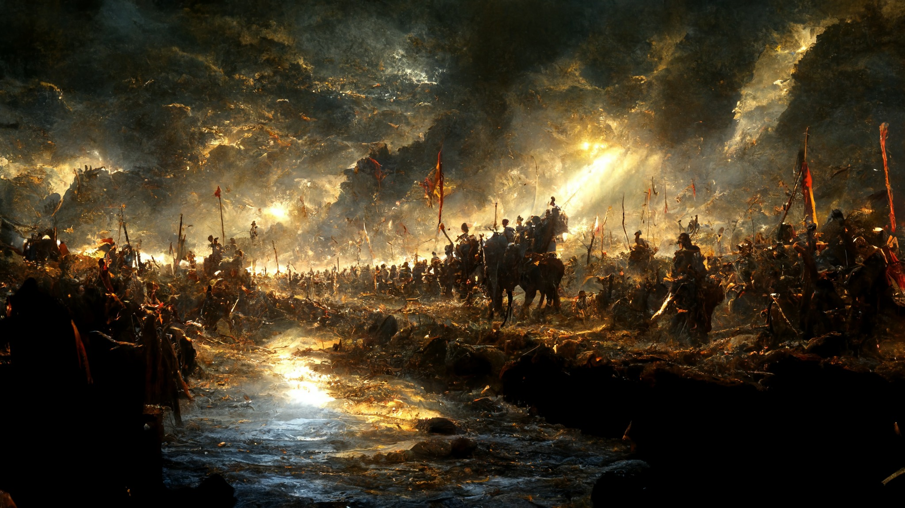

About Me
I'm currently in my first semester of the Interactive Media Design program. I was convinced I wouldn't be able to start until September because I hadn't been accepted and was stuck on the waitlist, but luckily the timing worked out. I moved in with some other Algonquin students on Thursday, got my acceptance email just in the nick of time on Friday afternoon, and then began my first day of school on Monday. Just barely made it in.
So far my two favourite classes are Digital Graphics and Web Dev. I love doing digital art as a hobby, especially when bringing scenes from books to life. So I'm already familiar with Photoshop but I've wanted to learn Illustrator for a long time and it's nice to actually do that. When it comes to Web Dev, I haven't played with HTML since I was a kid, and I was never all that good at it. So it's been fun brushing up.
I think I'm a very creative person, and in terms of my hobbies, my main passions are digital painting and reading. I love books more than anything and I'm obsessed with the SFF genre. I've read basically every major scifi and fantasy book out there, and I run through books at a super fast pace. I go through about 110-120 books/year.
Something that helps me devour so many books is Audible. As much as I love reading, I love being able to multitask more, and discovering audiobooks was a huge win for me, because it allows me consume fiction while walking to school, cooking, cleaning or most importantly, while doing art.
Hobbies:
“Amazing, when you thought about it: how quickly-made decisions became the life you lived.”
Sailing to Saratium
—Guy Gavriel Kay
That brings us to my other passion. I love digital art. After a trip abroad, I ended up moving to Spain for 2.5yrs to attend the Barcelona Academy of Art. It was an atelier school where the first year was focused on traditional fine art, and the second year dove into digital painting. I find art very relaxing, and it's a fun skill to have when it means I can combine my two passions and bring incredible scenes from my favourite books to live by illustrating them. Here's an example of a battle scene from my favourite series. This is the Battle of the Shore from the Malazan Book of the Fallen. Malazan is the most epic fantasy there is, with its unrivaled scope, and the fact it was written by a Canadian archeologist/anthropologist and based off of years of tabletop gaming in an original fantasy world, means that there are endless stories to tell. It's a series unlike any other, and I love bringing scenes to life.
